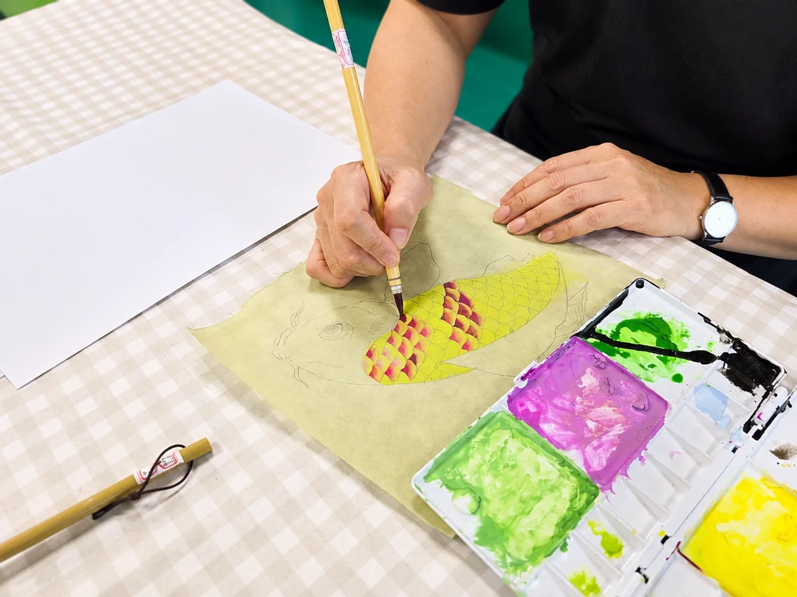
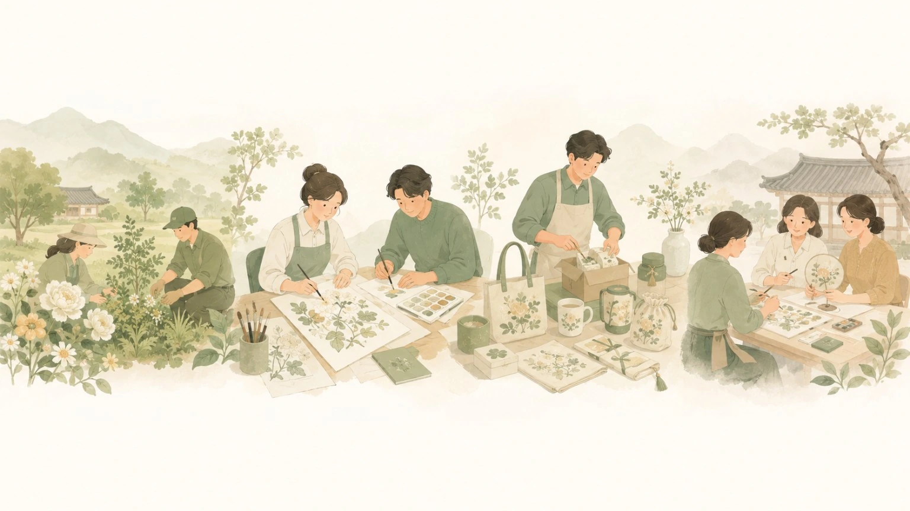
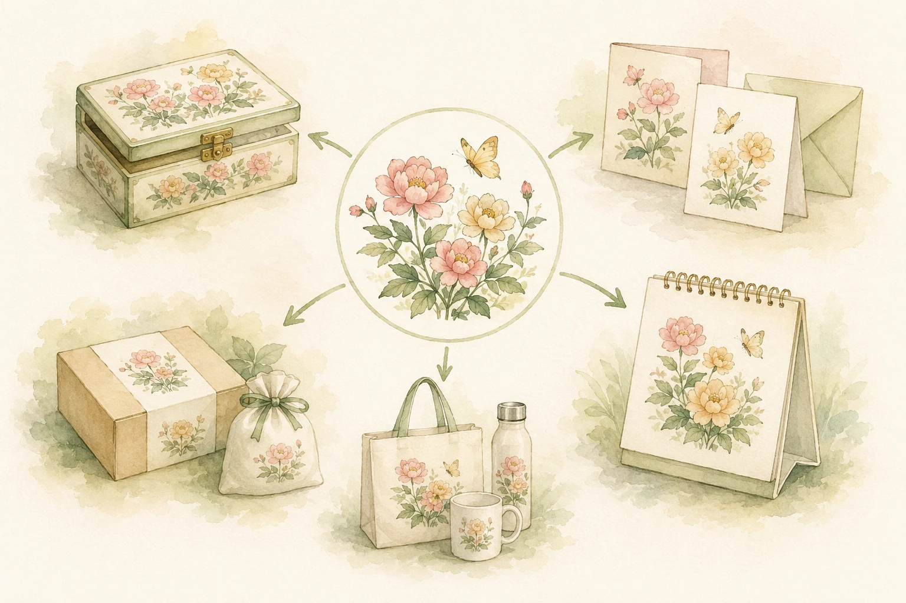

사람에게 맞는 일에서 시작했습니다

태장을 준비하며 먼저 고민한 것은 무엇을 팔 것인가보다, 근로자의 강점과 작업 특성에 맞는 일이 무엇인가였습니다.
민화는 순서가 보이고 반복할수록 익숙해지는 작업입니다. 그래서 태장의 첫 직무가 되었습니다.
농업의 이야기가 그림이 됩니다
과수원과 농촌의 풍경, 꽃과 나무, 지역의 농산물은 민화의 소재가 될 수 있습니다. 자연에서 얻은 이야기를 그림으로 풀어 제품과 문화 콘텐츠로 이어가는 방향을 생각하고 있습니다.

그림은 제품이 됩니다
태장은 완성된 그림을 전시하는 데서 끝내지 않습니다. 하나의 도안이 여러 제품으로 이어질 수 있는 구조를 만들어갑니다.

하나의 제품 안에 여러 일이 있습니다
모든 사람이 같은 방식으로 그림을 그릴 필요는 없습니다. 한 제품 안에는 서로 다른 역할과 공정이 있습니다.
- 재료 준비
- 도안 전사·채색
- 조립·마감
- 검수·포장
각자의 강점과 익숙한 작업에 따라 역할을 나누고, 여러 사람이 하나의 제품을 함께 완성하는 구조를 만들어갑니다.
이미 시작된 일입니다
민화 도안제품 제작검수·포장전달
민화 작업을 적용한 제품 제작과 전달 과정을 경험했습니다.
민화는 계획만이 아니라 실제 작업과 제품으로 이어지고 있습니다.
태장에서 일하는 사람들이 그린 그림이
제품이 되어 팔리는 회사.
제품이 되어 팔리는 회사.
태장은 민화를 취미가 아니라 일로, 그림이 아니라 지속 가능한 사업으로 이어가고 있습니다.